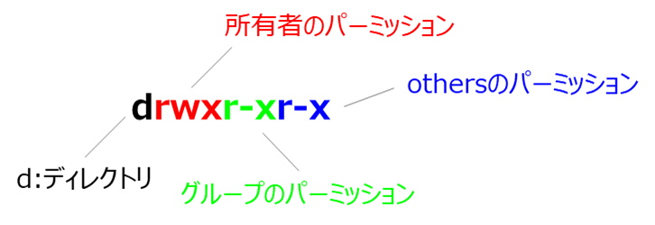

systemctl start httpd
systemctl status httpd
[root@ip-10-0-1-117 ~]# systemctl status httpd
● httpd.service - The Apache HTTP Server
Loaded: loaded (/usr/lib/systemd/system/httpd.service; enabled; vendor preset: disabled)
Active: inactive (dead) since Mon 2022-03-21 03:02:58 UTC; 43s ago
Docs: man:httpd.service(8)
Process: 2876 ExecStart=/usr/sbin/httpd $OPTIONS -DFOREGROUND (code=exited, status=0/SUCCESS)
Main PID: 2876 (code=exited, status=0/SUCCESS)
Status: "Total requests: 0; Idle/Busy workers 100/0;Requests/sec: 0; Bytes served/sec: 0 B/sec"
Mar 21 02:43:46 ip-10-0-1-117.ec2.internal systemd[1]: Starting The Apache HT...
Mar 21 02:43:46 ip-10-0-1-117.ec2.internal systemd[1]: Started The Apache HTT...
Mar 21 03:02:57 ip-10-0-1-117.ec2.internal systemd[1]: Stopping The Apache HT...
Mar 21 03:02:58 ip-10-0-1-117.ec2.internal systemd[1]: Stopped The Apache HTT...
Hint: Some lines were ellipsized, use -l to show in full.
[root@ip-10-0-1-117 ~]# systemctl status httpd
● httpd.service - The Apache HTTP Server
Loaded: loaded (/usr/lib/systemd/system/httpd.service; enabled; vendor preset: disabled)
Active: active (running) since Mon 2022-03-21 03:07:46 UTC; 1s ago
Docs: man:httpd.service(8)
Main PID: 3412 (httpd)
Status: "Processing requests..."
CGroup: /system.slice/httpd.service
tq3412 /usr/sbin/httpd -DFOREGROUND
tq3413 /usr/sbin/httpd -DFOREGROUND
tq3414 /usr/sbin/httpd -DFOREGROUND
tq3415 /usr/sbin/httpd -DFOREGROUND
tq3416 /usr/sbin/httpd -DFOREGROUND
mq3417 /usr/sbin/httpd -DFOREGROUND
Mar 21 03:07:46 ip-10-0-1-117.ec2.internal systemd[1]: Starting The Apache HTTP Server...
Mar 21 03:07:46 ip-10-0-1-117.ec2.internal systemd[1]: Started The Apache HTTP Server.
systemctl stop httpd
sudo firewall-cmd --permanent --zone=public --add-service=http
sudo firewall-cmd --permanent --zone=public --remove-service=http
※Security-Enhanced Linuxの略
setenforce 1
setenforce 0
ls -l /var/www/
ls -lコマンドに対するメッセージ
[root@ip-10-0-1-117 ~]# ls -l /var/www/
total 4
drwxr-xr-x 2 root root 6 Dec 30 21:40 cgi-bin
drwxr-xr-x 4 root root 4096 Mar 13 12:55 html
chmod o+w /var/www/html
chmodコマンド後の状態確認
[root@ip-10-0-1-117 ~]# chmod o+w /var/www/html/
[root@ip-10-0-1-117 ~]# ls -l /var/www/
total 4
drwxr-xr-x 2 root root 6 Dec 30 21:40 cgi-bin
drwxr-xrwx 4 root root 4096 Mar 13 12:55 html

othersにwrite権限を+している
以上